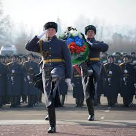

Как отмечают?
На 23 февраля принято возлагать венки и цветы к военным памятникам и мемориалам (например, к монументу Неизвестному солдату), проводить тематические лекции в учебных заведениях, выставки и другие мероприятия, связанные с военной тематикой
